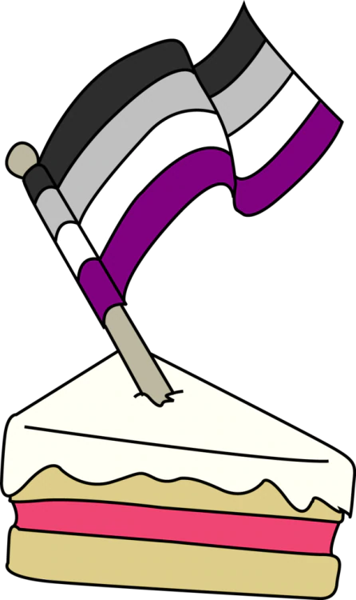
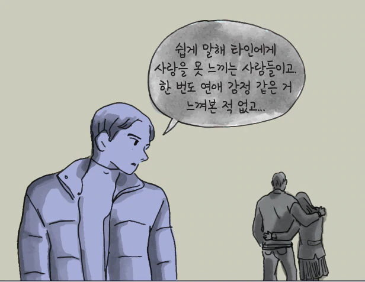

*성(性)에 있어서 지난 시대를 지배했던, 이성애 남성과 이성애 여성 간의 섹슈얼리티에 점점 균열이 일어나고 있습니다. 지난 칼럼에서 우리는 동성애와 다자연애 등을 포함한 개념의 '범성애'에 대해 다루며 다음 세대의 새로운 성(性)의 모습을 예측해 봤죠. 이번엔 로봇 섹스로도 유명한 디지털 섹슈얼리티와 무성애, 무낭만의 관계까지 이야기가 확장됩니다. (편집자)
인간을 넘어
범성애(성별을 구분 짓지 않는 사랑)가 이상하게 들린다면 디지섹슈얼리티(Digisexuality)는 어떤가요? 마니토바 대학의 철학자 닐 맥아더(Neil McArthur)는 로봇이나 다른 첨단 기술을 성적인 의미에서 선호하는 사람들을 '디지섹슈얼리티'라 명명했죠. 공저 <로봇 섹스(Robot Sex)>에서 맥아더와 저자들은 로봇이 성적 연인, 혹은 심지어 낭만적인 동반자의 역할을 하게 될 미래 사회를 다뤘습니다.
ⓒ영화 <엑스 마키나>
맥아더는 많은 이가 로봇과의 섹스가 사람들을 더 외롭게 만들 것이라 걱정한다고 말합니다. 무엇보다 누군가 로봇과의 성생활에 익숙해진다면 그가 모호하고 복잡한 다른 인간과의 성관계에 적응할 수 있을지도 문제가 있습니다. 인간 연인은 상대의 요구를 거부할 수 있지만, 로봇은 그러지 않으니까요.
또한, 로봇이 아직 인간이 미처 발견하지 못했던 새로운 기이한 성적 욕망을 발견하게 할 가능성은 없을까요?
맥아더는 이러한 우려들이 충분히 일리 있음에도 불구하고 로봇과의 섹스는 인류에게 도움이 될 것이라 믿습니다.
“섹스가 중요하다는 사실을 말하기 어려워할 필요는 없습니다. 사회는 사람들의 성적인 행복에 신경을 써야 합니다. 우리는 외로운 남자를 말하는 것이 아닙니다. 장애인이나 남녀 성비가 맞지 않는 지역의 사람들, 오지에 사는 사람들 그리고 사회적으로 성적인 매력이 떨어진다고 여겨지는 사람들 또한 성적 만족을 누릴 권리가 있습니다.”
이런 이들에게 섹스 로봇이나 VR을 이용한 성적 경험은 감정적으로, 심리학적으로 만족감을 줄 수 있습니다.
로봇은 또한 사람들에게 지금의 관계를 깨지 않으면서 성적 만족감을 느끼게 할 수 있습니다. 여전히 서로를 깊이 사랑하고 결혼 관계 또한 계속 유지하고 싶지만, 성적으로는 서로를 더 이상 자극할 수 없는 부부를 생각해 봅시다.
성적 교류를 포함한 인공지능과의 관계를 다룬 영화 <그녀(her)> ⓒ영화
또는 장거리 연애 중인 두 사람이 서로의 모습을 영상으로 보면서 물리적인 도구를 사용하는 경우도 있습니다. 최신 기술을 이용해 성적 욕구와 인간관계를 분리할 수 있습니다. 어쩌면 더 멋진 해결방안이 생겨날 수도 있습니다.
물론, 섹스 로봇으로 가득한 미래를 상상하기 위해서는 영화 <엑스 마키나(Ex Machina)>나 <미드 웨스트월드(Westworld)>에 묘사된 여성 로봇 이상을 생각할 필요가 있습니다. (섹스 로봇을 여성에 대한 남성의 성적 욕망으로만 한정시키는 것도 좋지 못한 상상력이겠죠.)
“나는 사람들이 가까운 시일 내에 영화에서 보이는 인간형 로봇보다 더 새로운 형태의 섹스 로봇을 만들어낼 것으로 생각합니다.” 맥아더는 치과에 페티쉬즘을 가진 한 친구의 이야기를 들려줬습니다. “그녀는 칫솔 모양의 로봇이 자신을 황홀하게 만들 것이라는 사실을 바로 깨달았습니다.”
낭만을 넘어
다음은 관계에 대한 이야기입니다.
왜 우리는 낭만적 사랑을 우정이나 친족 관계보다 더 중요하게 생각할까요? 왜 우리는 형제처럼 아끼는 사람보다 성적인 욕망을 느끼는 상대(낭만적 사랑의 대상)에게 일생을 함께하기로 약속할까요?
애리조나 주립대의 철학자 엘리자베스 브레이크(Elizabeth Brake)는 이러한 일련의 가정을 '사랑규범성(Amartonormativity)'이라 부릅니다. 이는 “모든 사람이 독점적, 낭만적, 장기적 연인 관계에 있을 때 더 행복하며 또한 모든 사람이 이런 관계를 원하고 있을 것”이라는 생각입니다.

"섹스보다 한 조각의 케잌이 낫다"는 의미로 그려진 에이섹슈얼(무성애) 마스코트
물론, 우리는 이 가정이 참이 아니라는 사실을 알고 있습니다. 많은 이가 홀로 자신의 삶을 즐기고 있으며 무성애자로 성적인 문제 없이 낭만적인 관계를 유지하는 이들도 있습니다.
그리고 무낭만적(Aromantic)이라 불리는 사람들이 있습니다. 그들은 친구들과 잘 지내지만, 이런 사랑규범성을 따라 완벽한 연인을 찾기 위한 모험을 추구하지 않습니다. 성정체성이나 성적지향처럼 낭만적 지향에도 다양한 스펙트럼이 존재하는 것입니다.
어떤 이들은 끊임없이 낭만을 추구하지만, 어떤 사람들은 이를 전혀 신경 쓰지 않습니다. 대부분의 사람은 그 사이 어딘가에 존재할 뿐입니다.
“사람들이 어떤 것에 끌리는지를 더 깊이 이해하게 되면서 매력에 다양한 차원이 있다는 것을 알게 됐습니다.” 치요이 루(Qiouyi Lu)의 말입니다. 그들은 할리우드가 '무낭만적 결론', 곧 두 명의 주인공이 사랑에 빠지기보다 평생의 친구로 남는 내용의 영화를 더 많이 만들게 될 것이라 생각합니다.

에이로맨틱(무낭만성) 소재의 에피소드를 다룬 웹툰 <이토록 보통의> ⓒ다음 웹툰 <이토록 보통의>
앞으로 우리는 상대에게 자신이 원하는 것을 더 다양하게 표현할 수 있게 될 것입니다. 자신은 자유연애주의자면서 무성애 비낭만주의 연인을 가진 사람이 다른 한 친구와는 독점적인 성적 관계를 유지하는 동시에 때로 로봇과 비낭만적이지만 과감한 성적 시도를 하는 것을 생각해봅시다.
킴 톨베어(Kim TallBear)는 우리가 언젠가는 '동성애자'나 '남자'라는 단어 대신 다른 사람과 어떤 관계를 맺고 있는지로 자신을 설명하게 될 것이라 생각합니다. “‘나는 어떤 특성이에요’ 보다는 ‘나는 누군가와 어떤 관계를 맺고 있습니다’처럼 말하게 될 겁니다.”
이런 점에서 이 모든 복잡한 정의는 결국 한 가지를 위한 것입니다. 바로 우리가 다른 이와 맺는 관계를 특정한 정해진 형태의 관계로 구속하는 것이 아니라 보다 자유로운 관계를 맺을 수 있게 만드는 것입니다.
우리가 서로를 아끼는 다양한 방법이 가능하다는 사실에 먼저 익숙해지고 나면 최고의 관계는 낭만적인 사랑이라는 생각 또한 벗어던질 수 있게 될 것입니다. 신기하게도 낭만적 사랑이 그저 수많은 관계 중의 하나가 될 때 우리는 훨씬 덜 외로워질 수 있을 것입니다.
직썰 필진 뉴스페퍼민트